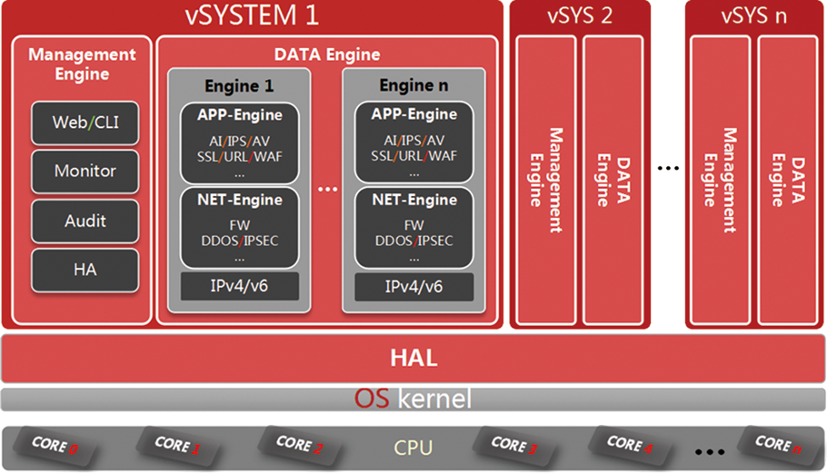
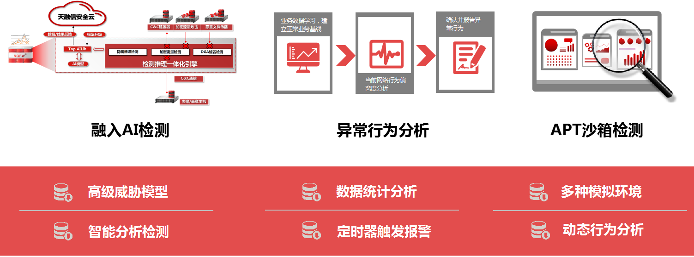
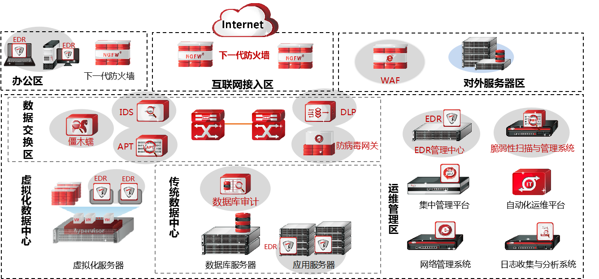
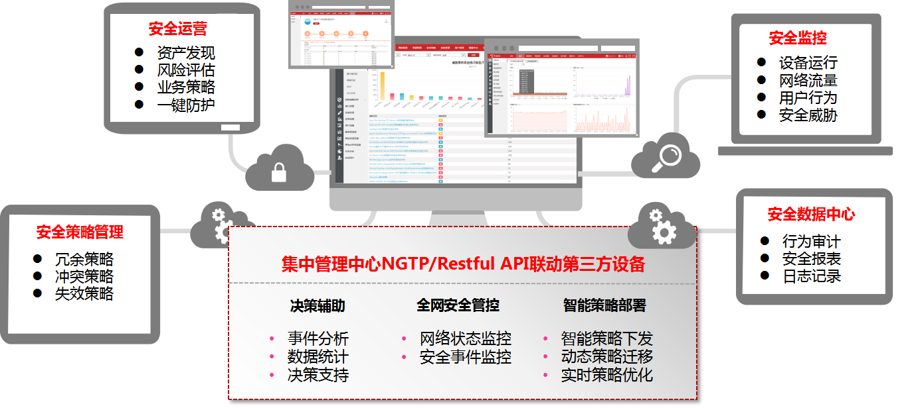

随着云计算、大数据、物联网、移动互联网、人工智能等新兴技术的不断发展，ICT网络环境持续变化。网络安全威胁的范围和内容不断扩大和演变，僵尸网络、钓鱼网站、分布式拒绝服务(DDoS攻击)等网络安全威胁有增无减，勒索软件、高级持续威胁(APT攻击)等新型网络攻击愈演愈烈，网络攻击趋向复杂化、系统化、高级化、规模化。下一代防火墙作为网络安全的第一道防线，要积极适应这些变化，融合更多更有效的安全检测、防护能力。天融信作为国内网络安全行业领军企业，一直以来注重为用户提供高品质的网络安全产品及解决方案，凭借多年的安全产品研发经验，天融信推出的全新下一代防火墙可帮助用户有效应对日益严峻的网络安全威胁。
·高性能处理架构
天融信全新下一代防火墙采用自主研发的64位多核多平台并行安全操作系统NGTOS，NGTOS系统能够充分利用多核CPU的计算资源，完美支持多路多核的全功能并行业务处理，在系统上层引擎的设计中，采用了特有的用户态协议栈，不但具有更高的执行效率，而且原生、完整的支持IPv4/v6双栈。

·IPv4/v6双栈防护
天融信全新下一代防火墙支持完整的IPv4/IPv6协议栈，通过融合下一代安全防护能力，为各种IPv4/IPv6应用安全提供支撑，包括IPv4/v6双栈访问控制、应用识别、AV、WAF、IPS、抗D、内容过滤等多种安全功能，帮助用户轻松应对IPv4及IPv6环境下的多种威胁。同时可提供IPv4/v6双栈流量、业务、威胁可视化展示和统计记录，方便客户掌控、审计网络流量和安全情况。
·安全融合防护升级
天融信全新下一代防火墙除具备应用识别、入侵防御、防病毒、URL过滤、数据过滤、文件过滤、流量管理、VPN等功能外，还增加了针对Web攻击、僵木蠕、DDOS、HTTPS加密流量等安全威胁的防护能力，为客户带来更有效的本地安全防护。同时，通过融入AI智能检测引擎、异常行为分析机制实现本地高级威胁检测防御，并通过联动机制获取APT、IDS、DLP、EDR等安全产品的检测结果，感知整网安全风险点，实现动态安全监控和处置，为客户提供覆盖端点、网络和服务的全域协同防护安全解决方案。
·高级威胁深度防御
高级威胁攻击通常使用先进的攻击手段对特定目标进行长期持续性的网络攻击，具有长期经营与策划、高度隐蔽等特性。天融信下一代防火墙内置多种高级威胁攻击防御解决手段，包括基于AI的高级威胁检测、基于行为分析的异常威胁检测和基于联动的未知威胁检测，打破高级威胁攻击隐蔽性和持续性这两个特性，斩断其“攻击链条”，多方位对高级威胁进行深度检测防御，有效阻止高级威胁攻击。

·全域感知协同防护
当前任何单一的网络安全产品都不可能解决所有安全问题，网络安全防护的有效性需要多种安全产品进行联动，融合各自的安全能力，补足单体的不足。天融信下一代防火墙通过协同机制，联动终端和网端，调动网内IDS、APT、EDR、DLP等其他天融信安全产品的检测能力，实现全局预警、协同防护、自动处置，为客户构建由单点向全域，由静态到动态的主动化纵深防御体系。

·智能管理安全运营
为了便于客户掌握网络中安全情况以及降低运维管理工作量，天融信下一代防火墙提供了智能运维管理的一系列工具，包括安全监控、数据中心、安全策略管理、安全中心、集中管理、第三方管理接口等。
